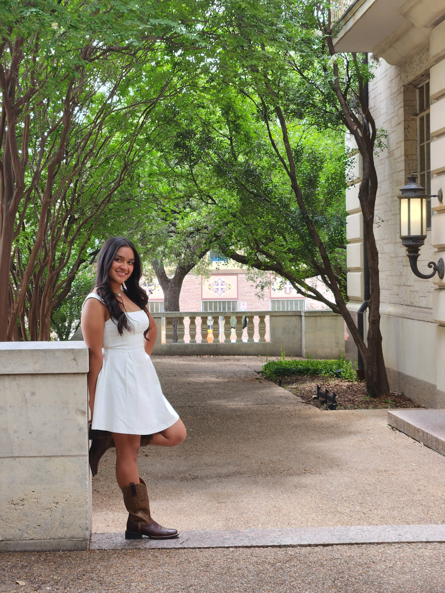
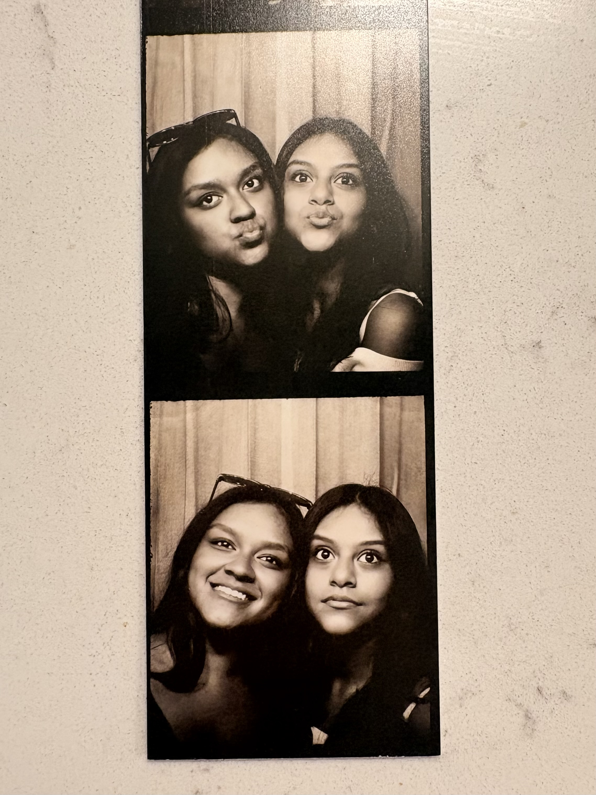

🍅 Study With Me Pomodoro Timer
🫧 Relax Bubble Game

SHORT AND SWEET!!
Hi! I’m Isabel Vazquez, a finance student at the McCombs School of Business at UT Austin. I’m interested in finance, business law, and eventually going into the corporate/M&A side of law one day. Most of the time I’m either studying, trying to survive group projects, or figuring out my next trip before I should probably be saving money instead. Outside of school, I love traveling, finding cute coffee shops, putting together fun outfits, and making everyday things feel a little more exciting. I’m definitely the type of person who romanticizes playlists, airport mornings, late-night talks, and color-coding everything for no reason. I also love meeting new people and making memories wherever I go — whether that’s in Austin, London, or somewhere completely random. Hook ’em!